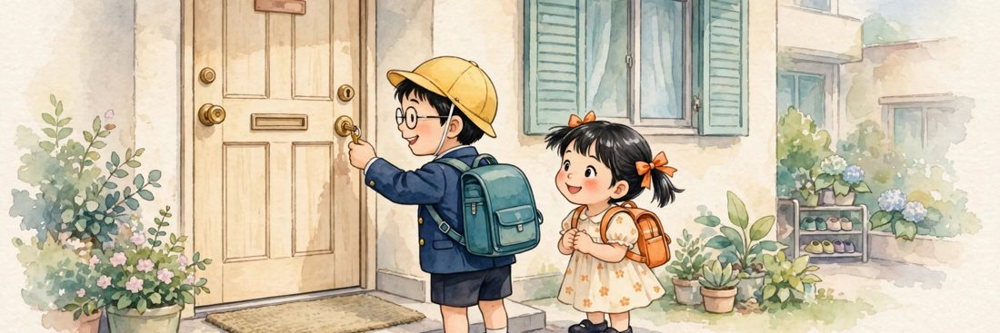

🆘 こまったとき
あんしょうばんごうを いれると、でんわボタンが でるよ
📞 でんわする
🤝 こまったときの やくそく

おうちでの やくそく
1
かぎを あけて いえに はいったら、かぎを しめる
2
いえに ついたら、まず 「ただいま」ボタンを おして、ママからの メッセージを かくにんする
3
インターホンが なっても、でない
4
おやつは、じゅんびされている ものを たべる
5
ベランダには でない
こまったとき・じしんのとき
6
とても こまったことが あったら、おとうさんか ママに でんわする
7
じしんの ときは、まず つくえの したに かくれて あたまを まもる
8
ゆれが おさまったら、そとに でて、ときわこうえんの ふんすいひろばに いく（おとうさんか ママが かならず むかえに いくよ）

いえに はいるまえに こまったら
9
かじや じしん いがいで こまったことが あったら、1かいの いりぐちから 「呼出」ボタンを おしたあとに みほちゃんの へやばんごうを おして、みほちゃんが いたら たすけて もらう
10
みほちゃんが いなかったら、1かいの いすに すわって ママが かえってくるのを まっててね
ママからの やくそく
♥
ママが かえる じかんは、だいたい 4じ10ふんごろから 5じごろ
♥
5じより かえりが おくれるときは、「ママからのメッセージ」に、かならず れんらくするね
ふたりとも、まもってくれて ありがとう